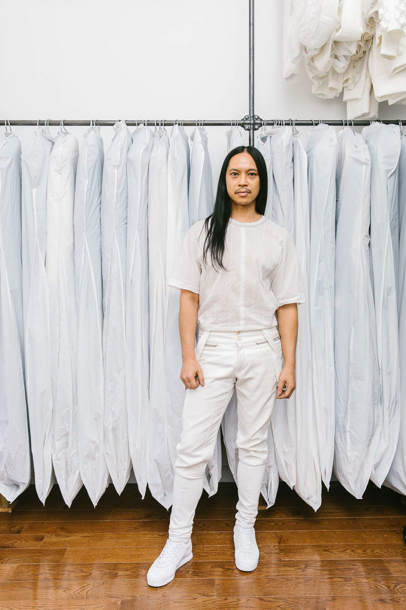
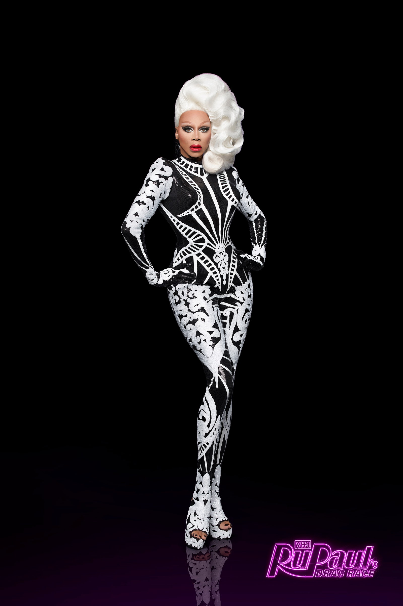
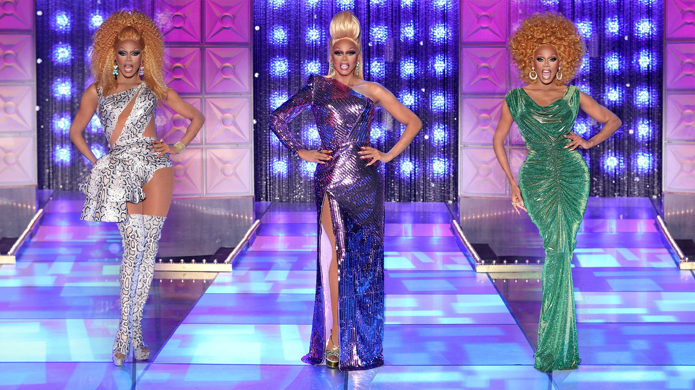
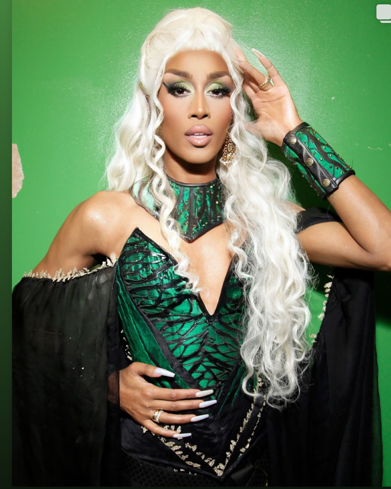
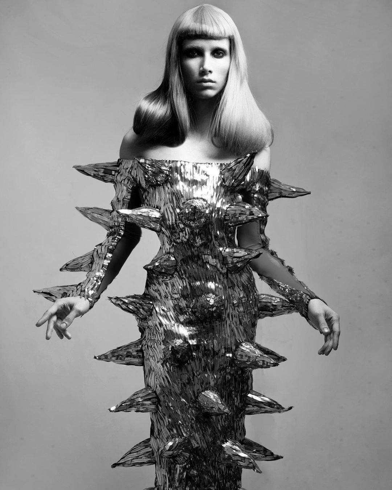
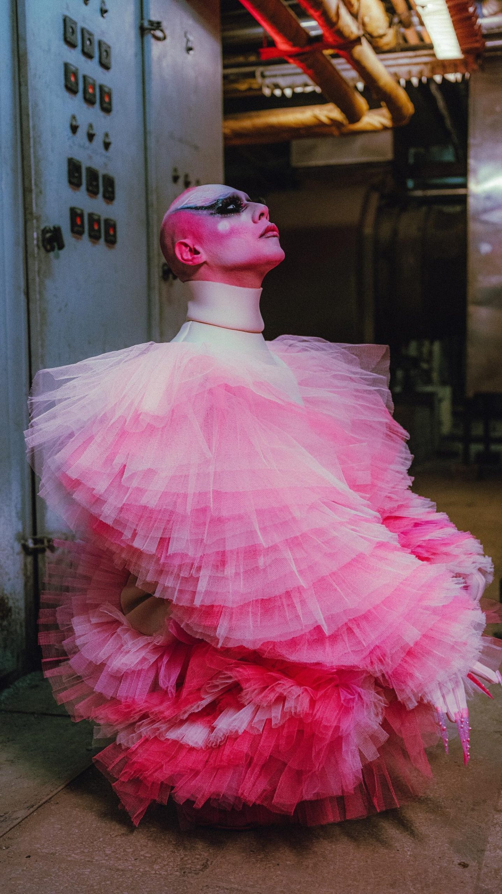

4 NTK DRAG QUEEN “THẦM LẶNG”: BÀN TAY PHÙ THỦY ĐỨNG SAU NHỮNG MÀN TRÌNH DIỄN SIÊU THỰC
Đằng sau những bộ trang phục lộng lẫy, đầy ấn tượng của các drag queen là những nhà thiết kế tài ba, những “phù thủy” thầm lặng biến hóa và thổi hồn cho những màn trình diễn nghệ thuật đầy cảm hứng.
Tháng tự hào (Pride Month) là dịp để cùng ôn lại chặng hành trình đầy gian nan chỉ để cất cao tiếng nói tình yêu của những người trong cộng đồng LGBTQ+. Hãy tôn vinh sự đa dạng, cá tính và tình con người lên trước nhất. Mỗi thời đại đều có những “nhân tố X” truyền cảm hứng, những người đã góp phần mở đường cho thế hệ LGBTQ+ sau này bằng những cách rất riêng biệt. Drag queen là một trong những biểu tượng tiêu biểu và chúng ta cũng không thể quên đi những bàn tay tài hoa đằng sau những bộ trang phục lộng lẫy, phá cách và táo bạo của bộ môn nghệ thuật này. Cùng ELLE khám phá 5 nhà thiết kế drag queen đầy ấn tượng đang khuấy đảo sàn diễn thời trang hiện nay nhé!
DIANNA DINOBLE

Rupaul’s Drag Race, chương trình truyền hình thực tế nổi tiếng về nghệ thuật drag, đã trở thành hiện tượng văn hóa đại chúng và đưa Drag Queen RuPaul lên tầm cao mới. Đằng sau “cơn mưa lời khen” cho những bộ trang phục lộng lẫy, cầu kỳ của RuPaul chính là Zaldy, nhà thiết kế tài ba đã gắn bó với RuPaul trong suốt hành trình đầy ấn tượng của anh.
Zaldy và RuPaul gặp nhau vào cuối những năm 80 tại hộp đêm La Palace de Beauté. Anh vẫn nhớ như in khi Ru mặc một bộ đồ hai đêm liên tiếp. Đó chính là lần gặp gỡ định mệnh và nhận lời giúp cô cho nhiều dự án sau này. Từ đó về sau, Zaldy chịu trách nhiệm chính về việc tạo ra những sản phẩm. làm việc cho RuPaul, bắt đầu với vẻ ngoài mà anh ấy tạo ra cho video “Siêu mẫu thế giới” khởi đầu sự nghiệp cho câu lạc bộ Drag vào năm 1993.

25 năm sau, RuPaul hoàn toàn tự hào về người bạn đồng hành của mình, chia sẻ: “Tôi sẽ không thể đi đâu nếu không có Zaldy”. Zaldy ước tính rằng anh tạo ra khoảng 80 bộ trang phục cho RuPaul mỗi năm, biến hóa phong cách vô cùng đa dạng, từ những bộ đồ ôm sát cơ thể màu vàng bóng đến những chiếc váy voan khổng lồ tả tơi, những chiếc váy ngắn corset dị hợm, và cả bộ trang phục ngựa vằn lấp lánh mà RuPaul đã mặc đến Met Gala năm 2019. Zaldy ví von rằng việc tạo ra 80 bộ trang phục mỗi năm thì cũng chả khác gì “một hoặc hai bộ sưu tập ở Paris”.

DIANNA DINOBLE
Không chỉ để tôn lên vòng một quyến rũ, những chiếc áo corset nịt ngực đồng thời nhẹ nhàng thắt chặt phần eo, hông, để lộ ra đường cong siêu thực vô cùng tinh tế. Và nó phù hợp cho bất cứ ai đang làm drag. Nên ta cũng không ngạc nhiên khi Dianna DiNoble đồng tình rằng: “Chúng (áo nịt ngực) thực sự là một nền tảng tuyệt vời đối với thiết kế phục trang vì thực sự có rất nhiều hình dáng bạn có thể làm với corset”.

BRAD CALLAHAN
Trang phục của Brad Callahan không dành cho những người lựa chọn sự an toàn. Từ những cách thiết kế trang phục vô cùng độc đáo như bộ áo da tổng hợp neon xù gai, váy cut-out cảm hứng tựa thiên nhiên siêu ôm dáng, một chút loli cùng chất lỏng tan chảy từ sữa hoặc thú nhồi bông. Không có gì ngạc nhiên khi nhà thiết kế này đã được Lady Gaga, Lizzo và Azealia Banks mặc trang phục trong nhiều dịp khác nhau.
Gần đây nhất, Brad Callahan cũng gây ấn tượng với bộ trang phục lông vũ màu xanh neon độc đáo cho nhân vật Amoeba Jobu trong bộ phim điện ảnh “Everything Everywhere All At Once”. Bộ trang phục bao gồm một lớp bodysuit xanh lá chanh ôm sát cơ thể, điểm xuyết những quả cầu lông vũ nhô ra tạo hiệu ứng người ngoài hành tinh. Đi kèm là kính bảo hộ có viền lông dị hợm cùng hoa tai vòng nhựa bản lớn.

ALEXEY GOLUBEV
Sinh ra và lớn lên tại Nga vào những năm 90, Golubev đã sớm bộc lộ niềm đam mê với thời trang. Anh thường xuyên xem những cuốn băng VHS ca nhạc Mỹ cũ và bị cuốn hút bởi những bộ trang phục lộng lẫy của các nghệ sĩ, như cách Madonna liên tục thay hình đổi dạng. Tuy nhiên, cơ hội để Golubev thực sự bước chân vào lĩnh vực thiết kế thời trang chỉ đến khi anh gặp Lorina Rey, người bạn đời hiện tại của mình.
